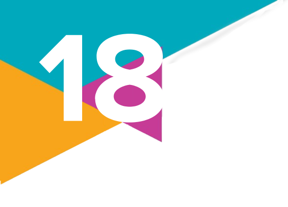

Desnaturalizando as
1.
De acordo com Muniz Sodré, qual é a definição de racismo?
2.
Quais são as características do racismo segundo Grada Kilomba?
3.
Analise os textos e o gráfico a seguir e faça o que se pede.
Texto I
Alguém poderia resumir [...] o que Michel Foucault entende por biopoder: aquele domínio da vida sobre o qual o poder tomou o controle. Mas sob quais condições práticas se exerce o direito de matar, deixar viver ou expor à morte? O que a implementação de tal direito nos diz sobre a pessoa que é, portanto, condenada à morte [...]? Essa noção de biopoder é suficiente para contabilizar as formas contemporâneas em que o político, por meio da guerra, da resistência ou da luta contra o terror, faz do assassinato do inimigo seu objetivo primeiro e absoluto? A guerra, afinal, é tanto um meio de alcançar a soberania como uma forma de exercer o direito de matar.
Texto II
[...] Quantos mais vão precisar morrer para que essa guerra acabe?
a) Qual conceito estudado neste capítulo é abordado pelo Texto I? Como ele se relaciona com a guerra mencionada no Texto II, de autoria de Marielle Franco?
b) Qual é a relação entre os Textos I e II e a situação apresentada no gráfico?
Texto I
Alguém poderia resumir [...] o que Michel Foucault entende por biopoder: aquele domínio da vida sobre o qual o poder tomou o controle. Mas sob quais condições práticas se exerce o direito de matar, deixar viver ou expor à morte? O que a implementação de tal direito nos diz sobre a pessoa que é, portanto, condenada à morte [...]? Essa noção de biopoder é suficiente para contabilizar as formas contemporâneas em que o político, por meio da guerra, da resistência ou da luta contra o terror, faz do assassinato do inimigo seu objetivo primeiro e absoluto? A guerra, afinal, é tanto um meio de alcançar a soberania como uma forma de exercer o direito de matar.
MBEMBE, A. Necropolítica. Arte & Ensaios, Rio de Janeiro, n. 32, p. 123-124, 2016. Disponível em: https://revistas.ufrj.br/index.php/ae/article/view/8993/7169. Acesso em: 16 set. 2024.
Texto II
[...] Quantos mais vão precisar morrer para que essa guerra acabe?
FRANCO, M. Mais um homicídio [...]. Rio de Janeiro, 13 mar. 2018. Twitter: @mariellefranco. Disponível em: https:// web.archive.org/web/20180316123605/https://twitter.com/ mariellefranco/status/973568966403731456. Acesso em: 24 set. 2024.
Fonte: RAMOS, S. et al. Pele alvo: a cor que a polícia apaga. Rio de Janeiro: Rede de Observatórios da Segurança/CESeC, 2022. E-book. Disponível em: https://cesecseguranca.com.br/wp-content/ uploads/2022/11/Pele-alvo-2.pdf. Acesso em: 14 set. 2024.
b) Qual é a relação entre os Textos I e II e a situação apresentada no gráfico?
4.
Leia o texto a seguir.
Na impossibilidade de negar os números que indicam claramente a discriminação racial no Brasil, os adeptos da ideologia da democracia racial procuram justificar as desigualdades apontando como causa da discriminação não a etnia, mas a condição econômica dos negros, na média bastante inferior à dos brancos. [...]
Ainda que tanto o estudante negro quanto o branco assistam às mesmas aulas e estudem pelos mesmos livros, este é apenas um aspecto muito reduzido de sua formação. A criança e o adolescente refletirão boa parte das expectativas que seus pais, professores e colegas depositam nele. Se o aluno branco é visto por seus professores como "brilhante" e o negro como "esforçado", esta diferença acumulada durante mais de 10 anos de estudos resultará em níveis de autoconfiança bastante diferentes.
O texto utiliza o exemplo de estudantes negros e brancos que estudam na mesma sala de aula para ilustrar que:
a) A desigualdade econômica é o principal obstáculo para o acesso de negros à universidade.
b) A meritocracia é suficiente para garantir a igualdade de oportunidades, independentemente da raça.
c) O racismo estrutural impõe desafios adicionais aos estudantes negros, mesmo em condições socioeconômicas semelhantes.
d) As cotas raciais são injustas, pois ignoram o mérito individual dos estudantes.
e) A solução para as desigualdades raciais passa pela eliminação das diferenças socioeconômicas.
Na impossibilidade de negar os números que indicam claramente a discriminação racial no Brasil, os adeptos da ideologia da democracia racial procuram justificar as desigualdades apontando como causa da discriminação não a etnia, mas a condição econômica dos negros, na média bastante inferior à dos brancos. [...]
Ainda que tanto o estudante negro quanto o branco assistam às mesmas aulas e estudem pelos mesmos livros, este é apenas um aspecto muito reduzido de sua formação. A criança e o adolescente refletirão boa parte das expectativas que seus pais, professores e colegas depositam nele. Se o aluno branco é visto por seus professores como "brilhante" e o negro como "esforçado", esta diferença acumulada durante mais de 10 anos de estudos resultará em níveis de autoconfiança bastante diferentes.
MOREIRA, M. Cotas da igualdade. Ibase, Rio de Janeiro, 25 abr. 2012. Disponível em: https://ibase.br/cotas-da-igualdade/. Acesso em: 14 set. 2024.
O texto utiliza o exemplo de estudantes negros e brancos que estudam na mesma sala de aula para ilustrar que:
a) A desigualdade econômica é o principal obstáculo para o acesso de negros à universidade.
b) A meritocracia é suficiente para garantir a igualdade de oportunidades, independentemente da raça.
c) O racismo estrutural impõe desafios adicionais aos estudantes negros, mesmo em condições socioeconômicas semelhantes.
d) As cotas raciais são injustas, pois ignoram o mérito individual dos estudantes.
e) A solução para as desigualdades raciais passa pela eliminação das diferenças socioeconômicas.
5.
Sobre as políticas de ações afirmativas no Brasil, responda:
a) Quais são as principais políticas de ações afirmativas existentes no Brasil atualmente?
b) Qual é a relação entre essas políticas e a ideia de "reparação histórica"?
c) Qual é o papel dessas políticas no enfrentamento da desigualdade racial no país?
a) Quais são as principais políticas de ações afirmativas existentes no Brasil atualmente?
b) Qual é a relação entre essas políticas e a ideia de "reparação histórica"?
c) Qual é o papel dessas políticas no enfrentamento da desigualdade racial no país?